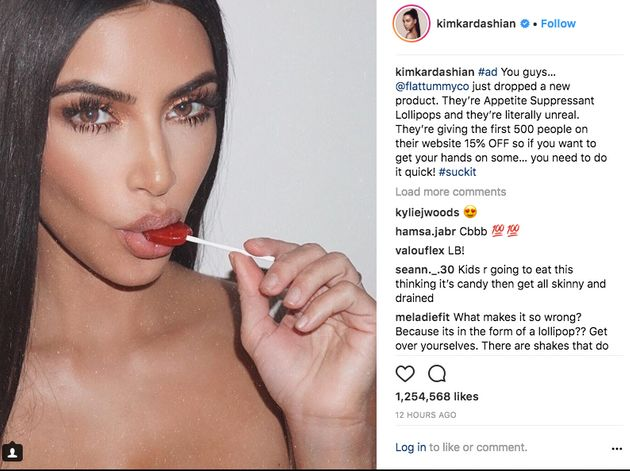
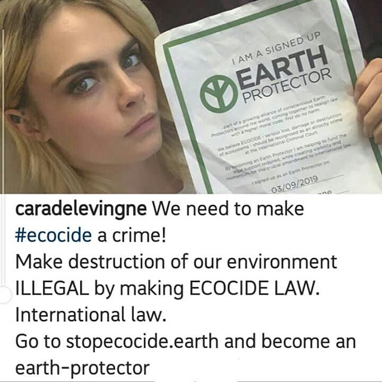

Are influencers really here to inspire? Or do they actually affect our lives in a negative way? As teenagers, influencers' worlds can seem like paradise, in a way that can send our self-esteem plummeting; it can increase FOMO and, unfortunately, create anxiety. Heck, this isn’t just relevant for teens, but everyone has felt this pressure exerted onto us from the ever so powerful social media.
The truth is that people only show the sides of themselves they want the world to see, they want you to see how beautiful they look after a breakup, how amazing their recent vacations were, and to show off their clothes that you just can’t afford. And even then, we must speculate whether the side they’re showing is even true at all, that it’s not just some fantasy they conjured up in order to fulfill their ego.
Influencers are affecting us: with the rise of social media, we’ve become a generation that is image-obsessed, ready to give up when we haven’t reached our dreams like "so and so" has. We feel like failures, prepared to yield at any roadblock we encounter.
Our mental state is being put at risk; influencers can use their power to make you buy into something you do not need. A common product that is advertised on social media is appetite suppressants. Last year, Kim Kardashian created a sponsored post with Flat Tummy Co. She created an image of her sucking on a lollipop with this caption (as you can see below).
Kim Kardashian has a huge following, and the people that support her try to imitate her lifestyle. For her to promote diet supplements is incredibly irresponsible. As girls and women, we receive enough scrutiny for what our bodies should look like and we don’t need to see constant reminders that can perpetuate self-image problems on an app that we go on in order to enjoy ourselves.
What about the distress influencers cause to the environment, like Cara Delevingne who spread awareness about being eco-friendly, but then turns her back to the cause she advocates for to earn a paycheck? Delevingne worked with Advaya Initiative to create My Eco Resolution, they are a campaign that inspires us to change our lives to be environmentally friendly. And yes, in their about me they tell us not to buy fast fashion. She had even captioned one of her instagram photos, “Make destruction of our environment illegal by making ecocide law. International law (as you can see below).
But on Wednesday a Nasty Gal and Delevingne collaboration dropped. This fast fashion brand is known for causing significant environmental problems. Afterwards, hundreds of influencers repost the same collection, promoting that it’s already 50%. Consumers see this immediate mark down and participate in this bad practice or at least are tempted too. The same thing happened with Billie Eilish and her Bershka collaboration when before collaborating with one of the most damaging fashion brands, she had created a PSA on climate emergency titled "Our House Is on Fire". Did someone say hypocrite? I sure did. Fast fashion is incredibly detrimental to the environment and while these influencers are pretending to be true activists, the next thing they do is post a trendy top (from a fast fashion brand) causing the vicious cycle of fast fashion to continue. A cycle of which involves you constantly buying the next “newest” thing instead of investing in something of quality, something timeless, something that could be worn time and time again, and most importantly something sustainable. And shocker alert, some of these influencers can’t actually afford these clothes, they buy, post, and return them the next day to create the illusion that everyone seems to feed into.
Influencers also feel as if they have the privilege to do what others can’t. Designers have come out addressing how influencers ask for free products for a post in return. Christian Benner is a designer that posts conversations when influencers reach out to him to promote his product in exchange for a free custom jacket. Even though most of these influencers ask politely it could still feel offensive to the designer. The issue isn’t that they are asking to collaborate, some brands might even like the idea of collaborating if you were able to bring something to the table, but the issue is that they just want the item for free. That it’s the first thing they ask for. The reason this is a problem is because it effects smaller designers. Big designers have the marketing capital to either pay influencers or provide free product, but small brands may not. These smaller brands may feel that in order to keep up with bigger brands they have to engage in influencer marketing. The truth is that if influencers truly love this smaller brand they should support it out of their own pocket because they’re the ones that need the support the most.
And yes, I have painted you an ill portrait of the bad an influencer can cause and I’m not telling you to stop looking up to somebody, because role models are important. But I’m advising you to be aware. Challenge the information you look at, make your own decisions about someone or something, and to stop following the influencers that only care about their paycheck, the ones that don’t appreciate those who’ve they inspired.